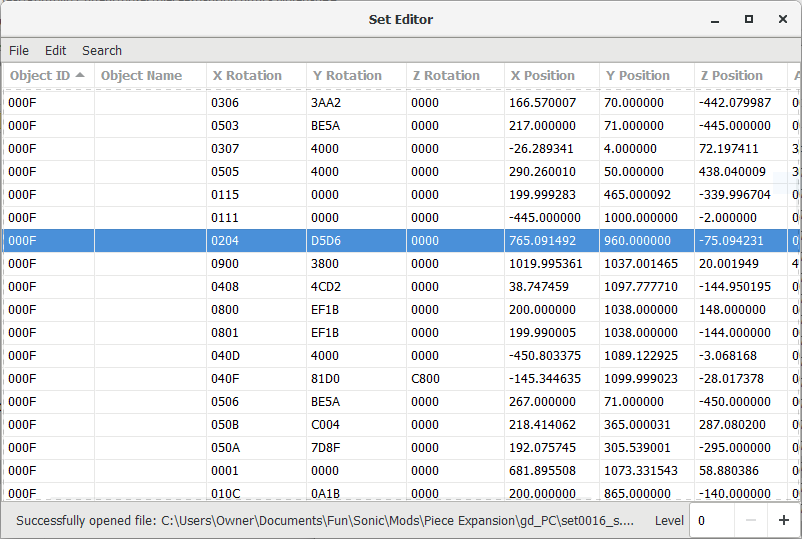

In creating mods for Sonic Adventure 2, first I had to disect the way the game reads its object files. Each stage has a list of objects it can load, and then a binary setfile that contains all of the objects in the stage. Previously, other people dug into the assembly to extract the data, figured out the general structure of these lists and of each object, and created rudimentary editors of the setfiles to allow for level mods.
However, I am the first (and only) person to experiment with the parameters of each object type to discover what they actually change about them. I have documented my work on public spreadsheets as a reference other modders-to-be as well as myself.
Another part of research I contributed to is understanding the random generation of collectibles for one of the game's three playstyles, which has the objective of finding the spawned collectibles. This generation isn't true random: There's a pre-defined list of potential locations (also located within the setfile) and the game uses a mathematical formula to attempt to generate a set of locations that aren't too close together.

I coded a tool in C# that recreates the algorithm using either the game files directly or an arbitrary dataset defined in a CSV, allowing it to be used in custom levels. This tool is available for download here. What's more, I compiled all of the data for the game's existing levels into another set of spreadsheets, which is also publicly available. The data has aided speedrunners in calculating probabilities of finding the collectibles in certain areas, which optimizes their searches to complete levels faster.